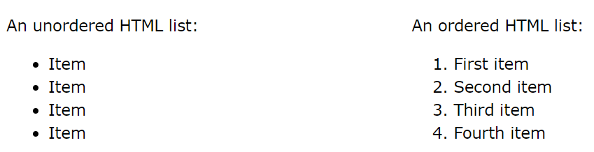
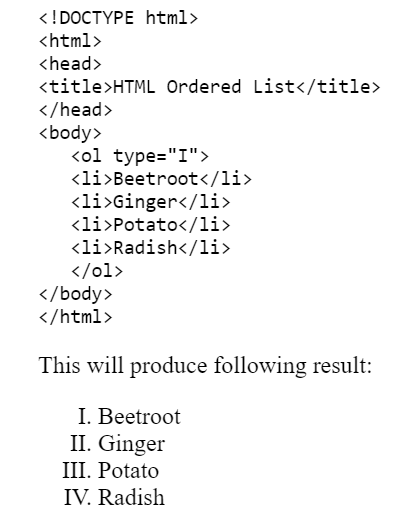
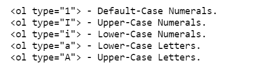
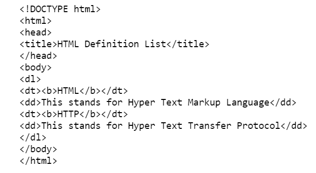

Html Lists
HTML lists allow web developers to group a set of related items in lists.

Unordered lists
An unordered list is a collection of related items that have no special order or sequence. This list is created by using HTML ul tag. Each item in the list is marked with a bullet.
SEE EXAMPLE
Ordered list
An ordered list starts with the ol tag. Each list item starts with the li tag.
SEE example
The type attribute
You can use type attribute for ol tag to specify the type of numbering you like. By default it is a number. Following are the possible options:

HTML Definition Lists
HTML and XHTML support a list style which is called definition lists where entries are listed like in a dictionary or encyclopedia. The definition list is the ideal way to present a glossary, list of terms, or other name/value list. Definition List makes use of following three tags.
- dl - Defines the start of the list
- dt - A term
- dd - Term definition
- dl - Defines the end of the list

What is Frames
- A method for dividing the browser into smaller subwindows.
- Each subwindow displaying a different HTML document.
Merits
- Allows parts of the page to remain stationary while other parts scrolls.
- They can unify resources that reside on separate web server.
- There is a noframe tag using which it is possible to add alternative content bfor browsers that do not support frames.
Demerits
- All browsers do not support frames.
- Documents nested in frame is more difficult to bookmark.
- Load on the server can significantly increased, if there a large number of frames in a page.
- Frames are difficult to handle for search engines.